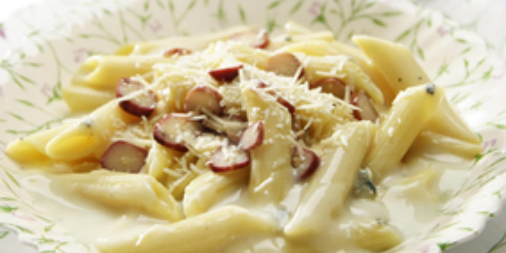

Como fazer Macarrão Romance

Ingredientes
Macarrão
- meio pacote de macarrão tipo penne 250 g
- 1 colher (sopa) de sal
- 1 fio de azeite
Molho
- 1 colher (sopa) de manteiga
- 1 lata de NESTLÉ® Creme de Leite
- 1 xícara (chá) de Leite Líquido NINHO® Forti+ Integral
- 50 g de queijo gorgonzola amassado
- 2 colheres (sopa) de queijo parmesão ralado
- 200 g de pinhão cozidos picados
Modo de preparo
Macarrão
- Em uma panela, ferva dois litros e meio de água.
- Coloque o macarrão, o sal e o azeite e deixe cozinhar até ficar al dente.
Molho
- Em uma panela, aqueça a manteiga e junte o NESTLÉ Creme de Leite, o Leite NINHO e o
- queijo gorgonzola.
- Misture bem até obter um creme homogêneo, sem ferver.
- Desligue o fogo, escorra o macarrão e misture o Molho.
- Sirva polvilhado com queijo parmesão ralado e pinhões cozidos picados.